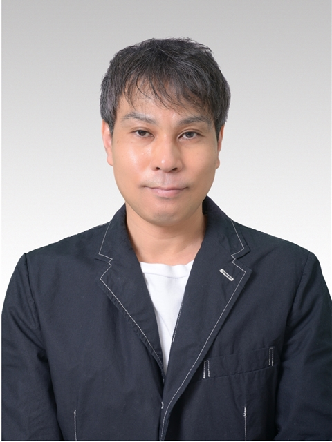
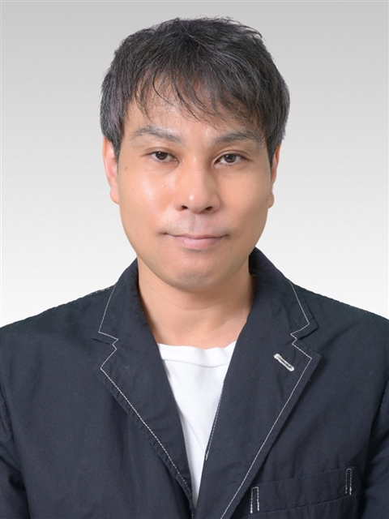

EC Business Operations Consulting
例えば、ECサイトの運用であれば、受注処理、在庫管理、モール運用、カスタマー対応まで。現場のオペレーションに入り込みながら、回る仕組みに立て直す業務改善コンサルティングです。
無料相談を申し込む
WHY IT HAPPENS
オペレーション上、日々の業務と問い合わせ対応に追われる中で「今のやり方が最適かどうか」を見直す時間が後回しになりがちです。属人化した業務、案件ごとに異なるルール、繁忙期のたびに繰り返される残業ーー多くの現場が、規模の大小を問わず同じ壁にぶつかっています。
資料やヒアリングだけで終える提案ではなく、実際の受注画面や業務フローに触れながら、現場で無理なく回る改善策を組み立てます。改善して終わりではなく、定着まで伴走します。
Process
01
ECサイトであれば、受注〜出荷〜カスタマー対応までの流れを、実際の業務に沿って可視化します。
02
ボトルネックを特定し、今の体制で無理なく回せる改善案に落とし込みます。
03
実運用に導入し、定例の振り返りを通じて改善を定着させます。
Where I can help
※上記はECサイトでの例ですが、それ以外も幅広く対応させていただきます。
WEB上での業務でしたらご相談ください。
Time Saving Estimate
現在かけている時間を入力すると、業務整理による目安の削減時間が表示されます。実際の削減幅はヒアリング後にご提案します。
Estimated monthly saving
0 時間 / 月
週あたり 現在0時間 → 目安0時間
※業務整理・属人化の解消によって、全体の20〜30%程度の時間削減が見込めるケースが多いという一般的な傾向をもとにした概算です（本シミュレーターは25%で試算しています）。実際の削減幅は業務内容によって異なるため、無料相談でのヒアリングを踏まえてご提案します。

業務改善コンサルタント
複数のEC事業者で運用に携わり、受注処理・在庫管理・モール運用・カスタマー対応まで、現場のオペレーションを一通り経験してきました。資料上の正論ではなく、実際に現場で回るやり方から改善を組み立てるスタイルを大切にしています。
また、ECサイト以外の内容についても承らせていただきますので、お気軽にご相談ください。
FAQ
現状の業務フローや課題の整理だけでも構いません。契約を前提としない範囲でお気軽にご相談ください。
事業規模は問いません。担当者が少ない体制ほど業務が属人化しやすいため、むしろお力になれることが多いです。
楽天市場・Amazon・自社ECなど、主要な販路の運用経験があります。使用中のカートシステムや在庫管理ツールについても、相談の中でお聞かせください。
基本はオンライン（ビデオ通話）での対応です。必要に応じて訪問についてもご相談に応じます。
単発のスポット相談から月次の継続伴走まで、ご要望に応じた形で対応しています。長期契約を前提としたご提案はしていません。
いいえ。相談内容を踏まえて必要な支援内容をご提案しますが、その場でのご契約は求めていません。
無料相談は30分程度、オンラインで承っています。すぐに契約を前提としたお話ではなく、現状の整理だけでも構いません。
返信について
通常2営業日以内にメールでご返信します。
対応形態
オンライン（ビデオ通話）を基本としています。
費用
初回相談は無料です。継続支援の内容・費用は相談内容に応じてご提案します。